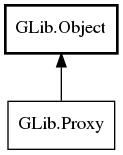

GLib.Proxy Reference Manual
Packages
gio-2.0
GLib
Proxy
get_default_for_protocol
connect
connect_async
supports_hostname
Proxy
Object Hierarchy:

Description:
public
interface
Proxy
:
Object
Namespace:
GLib
Package:
gio-2.0
Content:
Static methods:
public
static
Proxy
get_default_for_protocol
(
string
protocol)
Methods:
public
abstract
IOStream
connect
(
IOStream
connection,
ProxyAddress
proxy_address,
Cancellable
? cancellable =
null
)
throws
Error
public
abstract
async
IOStream
connect_async
(
IOStream
connection,
ProxyAddress
proxy_address,
Cancellable
? cancellable =
null
)
throws
Error
public
abstract
bool
supports_hostname
()